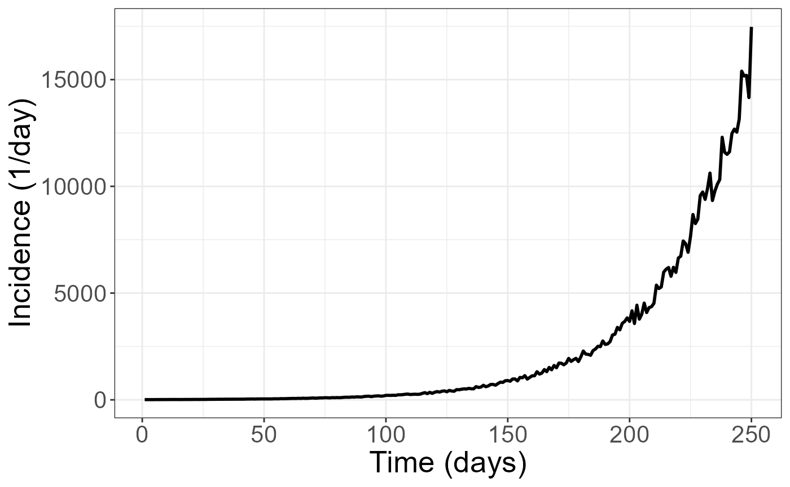

Usage, WIP
We’ll first load the package and ggplot2, then create an exponential growth curve to fit.
library(rtFilterEstim)
library(ggplot2)
theme_set(theme_bw())
time <- c(1:250)
incidence <- sapply(time, function(n){10*1.03**n})
ggplot(data.frame(time=time, incidence = incidence)) +
geom_line(aes(x=time, y=incidence), size=2) +
labs(x='Time (days)', y='Incidence (1/day)') +
theme(text = element_text(size=20))Then, we’ll just call the simple utility function filter_and_estimate on the incidence curve. We can see that the estimate is essentially perfect for most of the times, but becomes less accurate towards the beginning and end of the curve. This inaccuracy is actually limited to the length of the chosen Savitzky-Golay filter (n=7 in this case) due to using extrapolation at the beginning and end; however, the end results are not too inaccurate even with this limitation.
suppressWarnings(
estimated_rt <- filter_and_estimate(incidence,
n_resample=1, n=7)
)
df <- data.frame(incidence=incidence, rt_estimate = estimated_rt$mean, t = c(1:250), ideal = rep(log(1.03), 250))
ggplot(df) +
geom_line(aes(x=t, y=rt_estimate, color='Estimated'), alpha=0.5, size=2) +
geom_line(aes(x=t, y=ideal, color='Ideal'), alpha=0.5, size=2)+
labs(x='time', y='Growth rate', col='') +
theme(text = element_text(size=20))Let’s try a more difficult example with some noise added.
time <- c(1:250)
incidence <- sapply(time, function(n){10*(1.03**n)*runif(1, min=0.9, max=1.1)})
ggplot(data.frame(time=time, incidence = incidence)) +
geom_line(aes(x=time, y=incidence), size=1) +
labs(x='Time (days)', y='Incidence (1/day)') +
theme(text = element_text(size=20)) Due to the increased noise level in this data, a longer filtering interval may be necessary. (Filtering intervals must be odd, due to the use of the Savitzky-Golay filter). We will also make use of the confidence interval generation by using a reasonable number to bootstrap CI estimation.
suppressWarnings(
estimated_rt <- filter_and_estimate(incidence,
n_resample=100, n=15)
)
df <- data.frame(incidence=incidence, rt_estimate = estimated_rt$mean, upper = estimated_rt$upper, lower=estimated_rt$lower, t = c(1:250), ideal = rep(log(1.03), 250))
ggplot(df) +
geom_line(aes(x=t, y=rt_estimate, color='Estimated'), alpha=0.5, size=2) +
geom_line(aes(x=t, y=ideal, color='Ideal'), alpha=0.5, size=2)+
labs(x='time', y='Growth rate', col='') +
geom_ribbon(aes(x=t, ymin=lower, ymax=upper, alpha=0.05), show.legend=FALSE) +
theme(text = element_text(size=20))